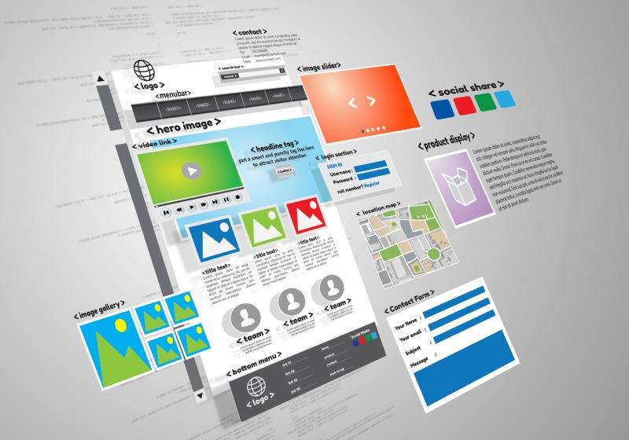
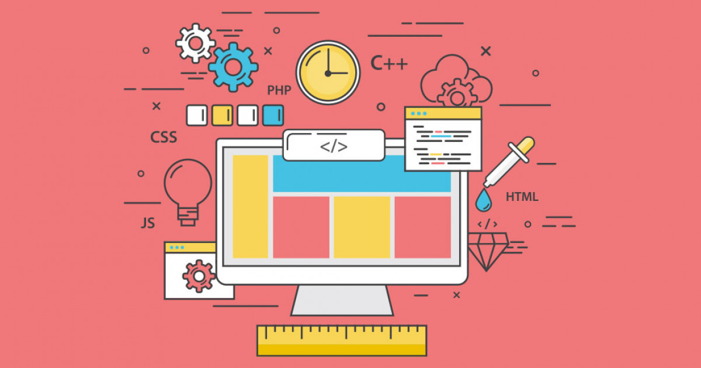
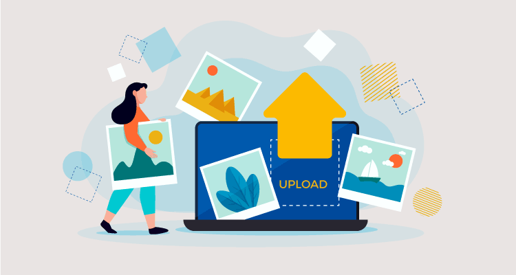

Antes de empezar, define:
Propósito del sitio (blog, portafolio, tienda en línea, etc.).
Público objetivo (¿para quién es el sitio?).
Contenido (texto, imágenes, videos, etc.).
4.2 Elección de Dominio y Hosting
Dominio: Es el nombre de tu sitio (ej. tusitio.com). Puedes comprarlo en plataformas como GoDaddy, Namecheap o Google Domains.
Hosting: Es donde se guardarán los archivos de tu web. Algunas opciones populares son Hostinger, Bluehost y SiteGround.
>
4.3 Creación del Sitio Web
Crear desde Cero con Código
Usa HTML, CSS y JavaScript si quieres más control.
Frameworks como React, Vue o Angular pueden ser útiles.
Para backend, usa Node.js, Django, Laravel, etc.

4.4 Diseño y Contenido
Diseño atractivo: Usa colores, tipografías y elementos que reflejen tu estilo.
Imágenes optimizadas: No uses archivos pesados para que tu sitio cargue rápido.
Contenido de calidad: Textos claros y llamativos.

4.5 Publicación y Optimización
Subir los archivos al hosting (si lo hiciste manualmente).
Configurar tu dominio para que apunte a tu hosting.
Optimización SEO para que Google te encuentre (usa palabras clave y meta etiquetas).
Seguridad: Instala un certificado SSL (https://).

4.6 Mantenimiento y Actualización
Revisa el rendimiento con Google Analytics.
Actualiza contenido regularmente.
Asegúrate de que todo funcione correctamente en móviles.